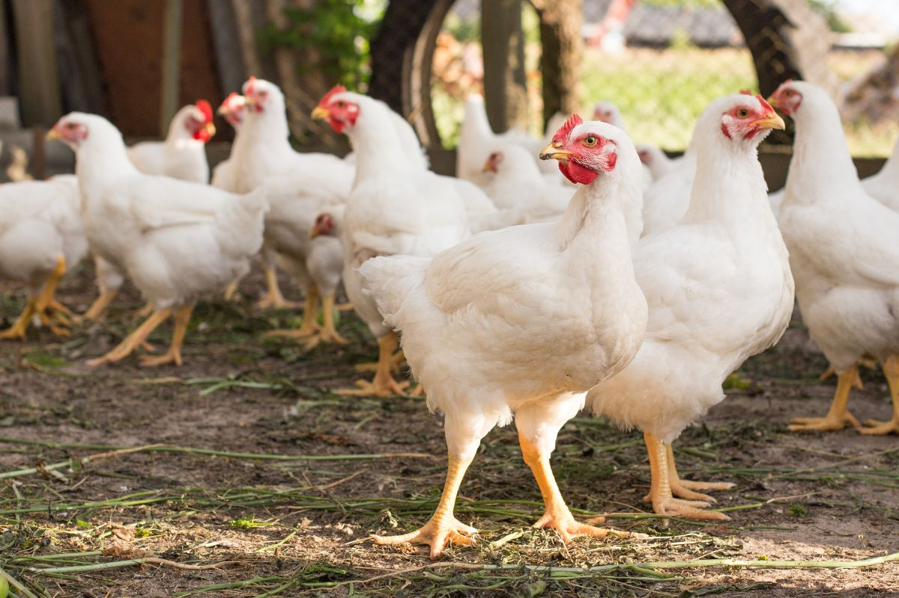
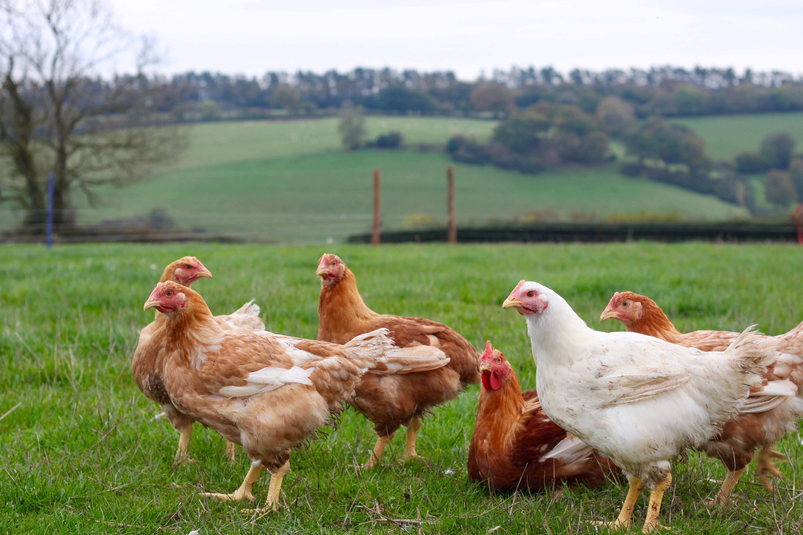
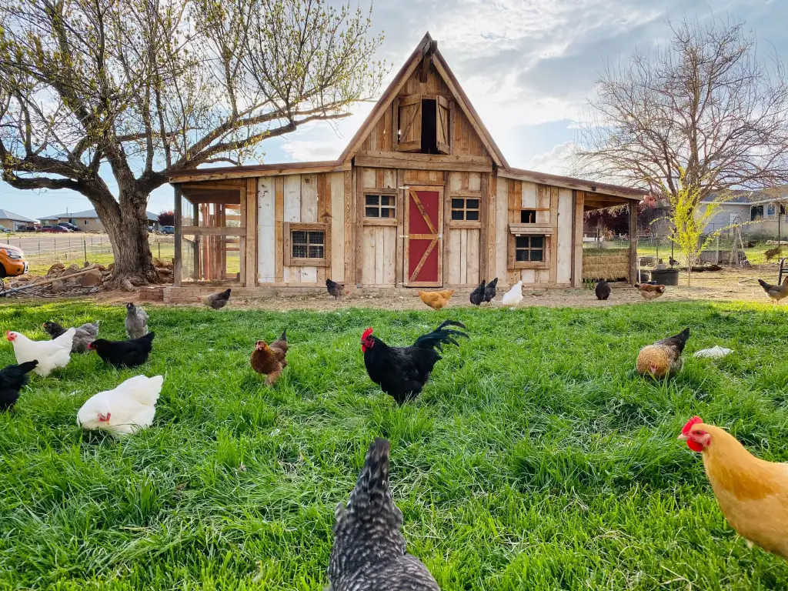
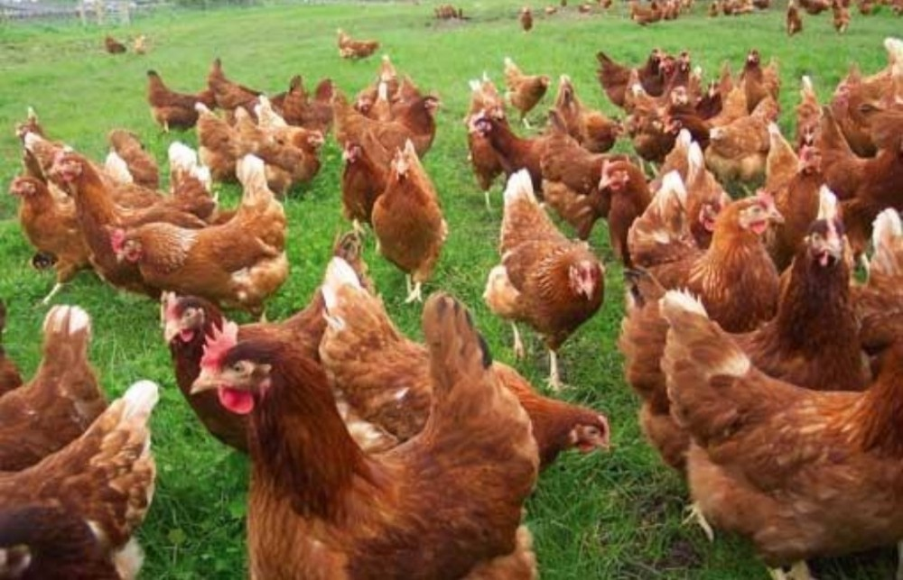

WELCOME TO FINA'S POULTRY
At Fina's Poultry Farm, we believe that good food starts with good farming. That's why we take the time to nurture our chickens in a natural and healthy environment. Our poultry is raised on lush, open pastures where they roam freely, ensuring not only their happiness but also the high quality of the meat and eggs they produce. We are dedicated to ethical farming practices, and we ensure that every step, from hatching to harvest, is carried out with the utmost care. We pride ourselves on providing our customers with the finest poultry products that are as nutritious as they are delicious.
OUR CURRENT DELIVERIES
Turkey and chicken are both excellent sources of lean, high-quality protein, which is essential for building and repairing body tissues. They are low in saturated fat compared to red meats, making them heart-friendly options for a balanced diet. Rich in vitamins like B6 and B12, as well as important minerals such as zinc, iron, and phosphorus, these poultry meats support immune function, energy production, and healthy brain function. Additionally, their lower fat content helps in weight management and promotes overall wellness when prepared with minimal added fats or sugars.



